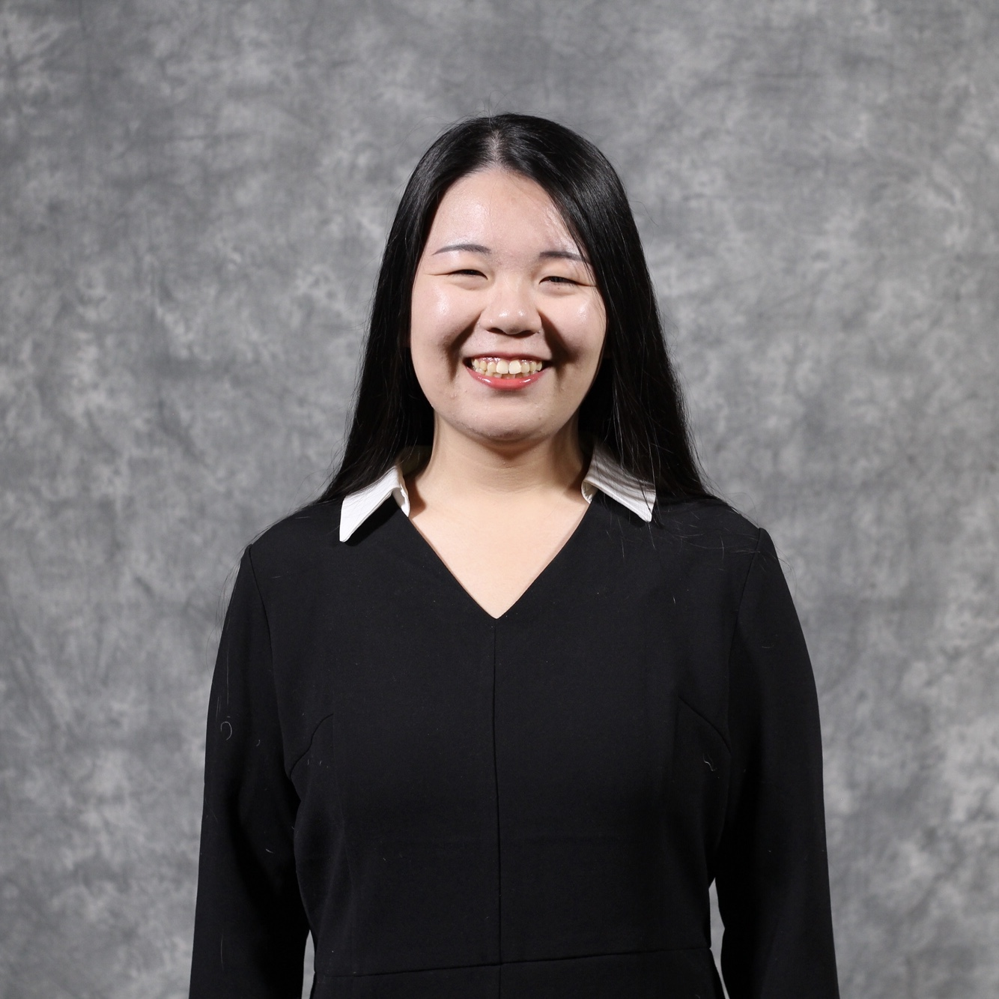

Resume
EDUCATION
University of Michigan, School of Information, Ann Arbor, MI
August 2018 -- December 2019
Master of Science in Information | GPA: 3.82 Specialization: UX Research and Design
University of Washington, Seattle, WA
September 2015 -- December 2017
Bachelor of Arts in Communication | English Minor | GPA: 3.62
WORK EXPERIENCE
Photographer/ Videographer
University of Michigan ArtsEngine
October 2018 -- current
- Responsible for photography, creation of storyboards and scripts, edition and production of short videos to support and promote the work of ArtsEngine
- Cooperated and interacted with a wide range of student and faculty for interdisciplinary projects on the campus and beyond
Teaching Fellow
Harvard College AUSCR Summit For Young Leaders in China
August 2018 -- August 2018
● Volunteered for 11 days at Shanghai High School
● Partnered with a Harvard College undergraduate student, teaching liberal arts seminars (Slam Poetry) and university level research methods to Chinese students, encouraging student to develop growth mindset and create solutions to pressing social issuesl
● Guided students through Capstone projects, led community building, held Office Hours daily, and even guided students, and cooperate with administration office.
Teaching Assistant
SIE International Summer School, Shanghai
July 2018 – August 2018
● TA for Introduction to Jazz and World Music classes at East China Normal University
● Gave two lectures to college students in English